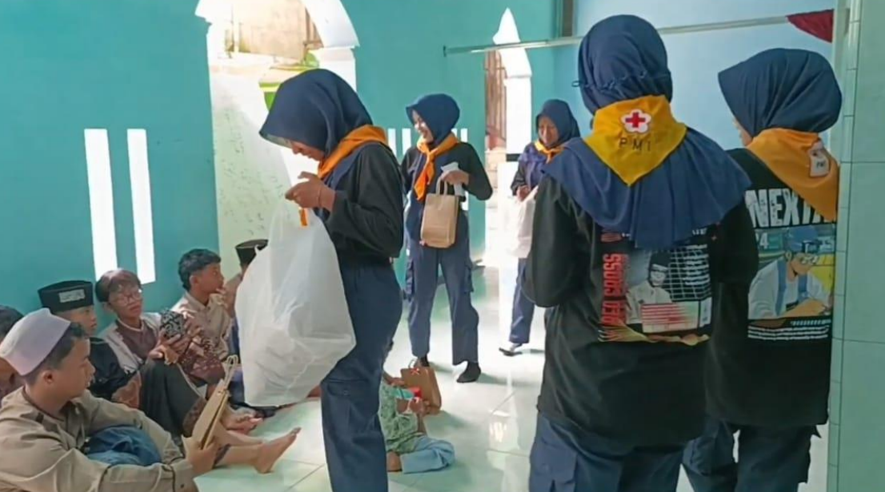
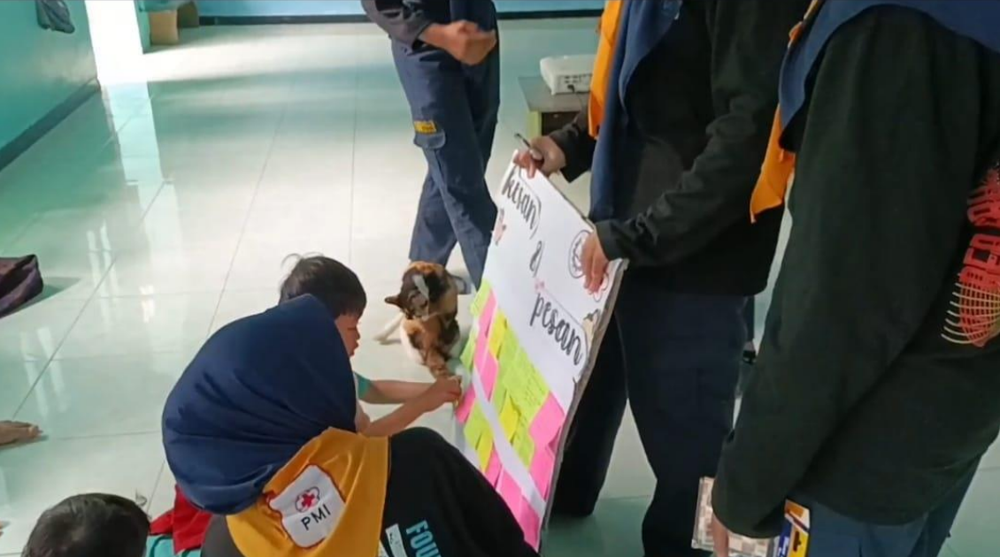
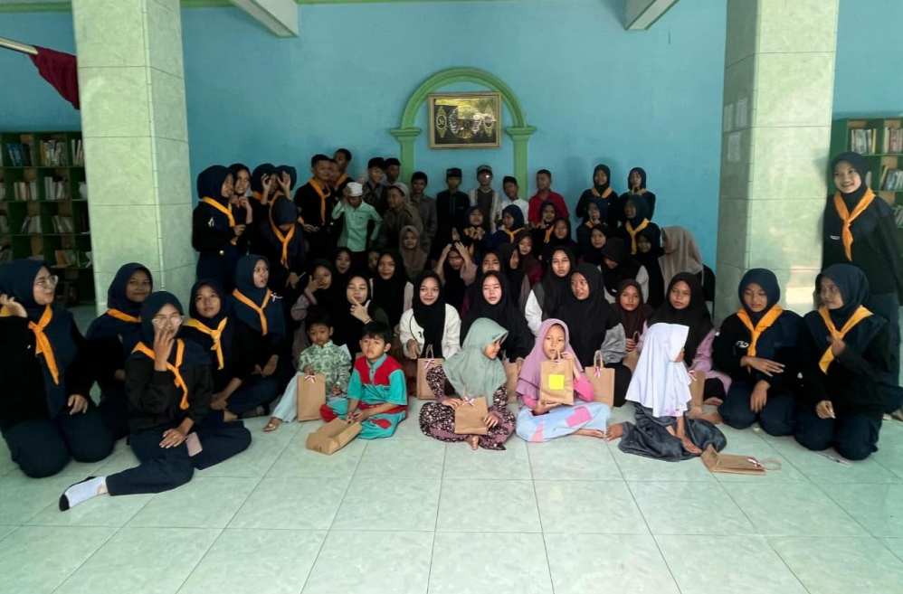

Minggu, 15 Maret 2026

Melalui kegiatan sosial seperti ini, anggota PMR dapat belajar bahwa kepedulian bukan hanya diwujudkan dalam bentuk materi, tetapi juga melalui perhatian, kebersamaan, dan semangat berbagi kepada mereka yang membutuhkan
Tujuan Kegiatan
Kunjungan ke panti asuhan bertujuan untuk mempererat hubungan sosial antara anggota PMR dengan masyarakat, khususnya anak-anak panti. Selain itu, kegiatan ini menjadi sarana pembelajaran bagi anggota PMR dalam menerapkan nilai-nilai kemanusiaan yang telah dipelajari selama mengikuti organisasi.
Kegiatan ini juga diharapkan dapat memberikan motivasi, semangat, dan kebahagiaan kepada anak-anak panti melalui berbagai aktivitas yang menyenangkan

Pelaksanaan Kegiatan
Kegiatan kunjungan ke panti asuhan diawali dengan persiapan yang dilakukan oleh seluruh anggota PMR, mulai dari mengumpulkan donasi, menyiapkan paket bantuan, hingga menyusun rangkaian acara. Setelah seluruh persiapan selesai, rombongan PMR berangkat menuju panti asuhan dengan penuh semangat untuk melaksanakan kegiatan sosial.
Sesampainya di lokasi, anggota PMR disambut hangat oleh pengurus dan anak-anak panti asuhan. Acara dibuka dengan sambutan singkat dari perwakilan PMR dan pihak panti sebagai bentuk ucapan terima kasih serta mempererat tali silaturahmi. Suasana yang awalnya canggung perlahan berubah menjadi akrab melalui sesi perkenalan dan berbagai permainan sederhana yang melibatkan seluruh peserta.
Kegiatan kemudian dilanjutkan dengan penyerahan bantuan berupa kebutuhan pokok dan perlengkapan yang telah dipersiapkan sebelumnya. Bantuan tersebut merupakan hasil kepedulian dan kerja sama seluruh anggota PMR serta para donatur yang ikut berpartisipasi. Meskipun sederhana, bantuan ini diharapkan dapat memberikan manfaat bagi anak-anak dan pengurus panti.
Selain memberikan bantuan, anggota PMR juga mengadakan berbagai kegiatan yang bertujuan menciptakan suasana hangat dan menyenangkan. Anak-anak diajak bermain permainan edukatif, bernyanyi bersama, berbagi cerita, serta mengikuti penyuluhan singkat mengenai pentingnya menjaga kebersihan diri dan menerapkan pola hidup sehat. Kegiatan ini tidak hanya memberikan pengetahuan baru, tetapi juga membangun rasa percaya diri dan kebersamaan.
Di akhir kegiatan, seluruh peserta berkumpul untuk mengabadikan momen melalui sesi foto bersama. Kegiatan ditutup dengan penuh rasa syukur dan harapan agar silaturahmi yang telah terjalin dapat terus berlanjut serta menjadi inspirasi bagi lebih banyak orang untuk ikut berkontribusi dalam kegiatan kemanusiaan.

Manfaat Kegiatan
Kunjungan ke panti asuhan memberikan manfaat bagi semua pihak. Bagi anak-anak panti, kegiatan ini menjadi pengalaman yang menyenangkan karena mereka mendapatkan perhatian, motivasi, dan kebersamaan. Sementara itu, bagi anggota PMR, kegiatan ini menjadi pengalaman berharga dalam mengembangkan rasa empati, tanggung jawab sosial, serta kemampuan bekerja sama.
Kegiatan ini juga membuktikan bahwa aksi kemanusiaan dapat dimulai dari langkah-langkah sederhana yang dilakukan dengan penuh keikhlasan.
Kunjungan ke panti asuhan merupakan salah satu bentuk nyata pengabdian anggota PMR kepada masyarakat. Melalui kegiatan ini, anggota PMR tidak hanya belajar membantu sesama, tetapi juga menanamkan nilai kepedulian, kasih sayang, dan semangat berbagi dalam kehidupan sehari-hari.
Diharapkan kegiatan seperti ini dapat terus dilaksanakan secara berkelanjutan sehingga semakin banyak generasi muda yang memiliki jiwa kemanusiaan, semangat gotong royong, dan kepedulian terhadap sesama.